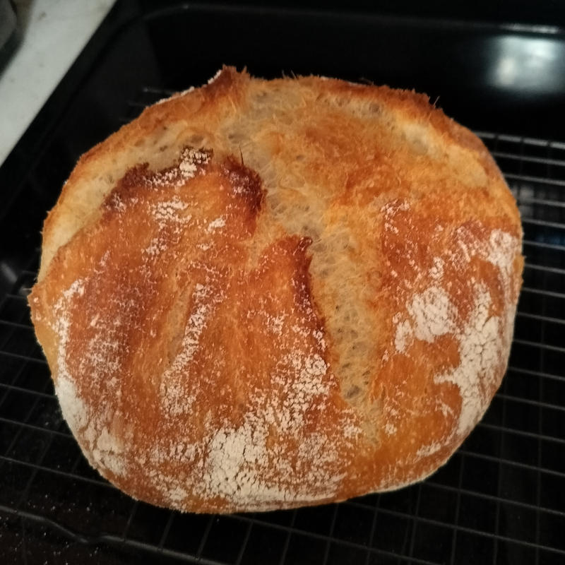

Recipes
This webpage is an ongoing list of recipes:
annotated, simplified and often modified.
I have tested and like the results of all of
these recipes.
All photos are of the specific recipe taken by me.
Index
Bread

- 400g bread flour
- 300g warm water (~120f)
- 8g diamond kosher salt
- 3g instant yeast from freezer
- 1/8tsp (a few drops) white vinegar
For hardware you need a large bowl, a
medium bowl that can act as a lid
for a dough ball inside of the large bowl, and parchment paper
for lowering the bread inside of the dutch oven
(~6 quart).
- Day 1: Take out a large and medium bowl.
In large bowl, combine dry
ingredients and mix by hand for a few seconds.
- Add water and vinegar and mix
until fairly homogeneous (not more than 1 minute or 2). Seal with
medium bowl (covering dough) and let rest for 20 minutes
- Dip fingers in water if needed to avoid sticking,
pinch a side, stretch out slightly and fold inward. Repeat 5 or so
times working around the dough. Finally, flip dough so top is on bottom
and replace medium bowl as lid
- Repeat step 3 once every 15-25 minutes, for 2-3 hours.
- Once 2-3 hours is completed and dough is supple, solid and
not that sticky, refrigerate for 6-18 hours with lid on.
- Day 2: Remove dough in large bowl with lid from
refrigerator. Leaving lid on, let warm up for 1 hour.
- After warmed up 1 hour,
punch and poke dough until as much air as possible is removed.
- Pull 5 points around dough at edges one at a time, to the center
point to shape dough into its final form.
- In a bowl with a heavily floured towel, place the dough folded side
down into the towel. Then cover the dough in the floured towel with
something to keep it from drying out (e.g. a flat baking sheet)
let dough rise for 2 hours.
- Right after folding the bread (with 2 hours left) set oven to
440 and put a covered dutch oven in it to preheat.
- After 2 hours, once bread looks a bit raised, transfer to
parchment paper lined baking sheet by placing the baking sheet over
the bowl then flipping the whole thing
- Remove lid from dutch oven, with oven mits lower bread with
parchment into the dutch oven. Replace lid. Cook for 27 minutes.
- Remove rid and cook for another 7 minutes or until you like the
color of the bed
- I think this is about the best bread you could hope to make
in your kitchen. It has a chewy, crunchy crust and a moist flavorful
crumb. Simple, yet complex if you eat it mindfully. Baguette like.
- If its your everyday bread it works well if you cut it into
slices and freeze it and after it cools down.
- This is a hybrid of a Lopez-Alt and Lahey recipe. I basically
memorized it, did it 100 times, then re-wrote the recipe from
memory.
- Lopez-Alts NYT version is almost 5000 words. I tried to be
a little more focused and concise.